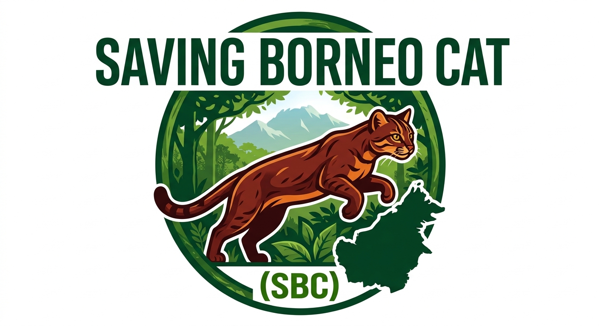

Investigar
Crear herramientas para reunir, ordenar y compartir información sobre la especie.
Conservación · Borneo
El gato de Borneo vive en silencio en uno de los bosques más importantes del planeta. Ayúdanos a conocerlo para poder protegerlo.
El gato de Borneo (Catopuma badia) es endémico de la isla y uno de los felinos más raros y menos estudiados del mundo. Cada fragmento de información puede cambiar lo que sabemos sobre su hábitat, sus amenazas y su futuro.
Cómo colaboramosSaving Borneo Cat nace para conectar conocimiento, tecnología y personas que quieren que este felino tenga una oportunidad.
Crear herramientas para reunir, ordenar y compartir información sobre la especie.
Acercar a investigadores, organizaciones y comunidades que ya están trabajando en Borneo.
Convertir el interés de personas como tú en recursos para la conservación.

Tu ayuda cuenta
Tu contribución ayuda a poner en marcha las primeras herramientas y alianzas del proyecto. Toda colaboración, grande o pequeña, abre una puerta.
Donar con Stripe El pago se procesa de forma segura a través de Stripe. Gracias por apoyar la protección del gato de Borneo.